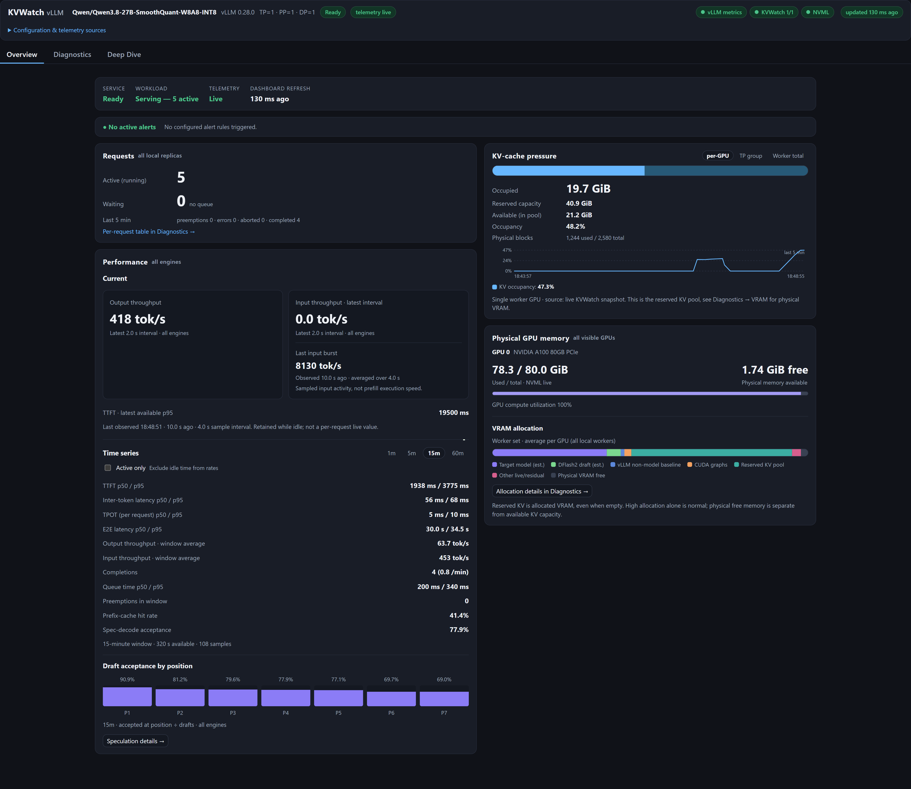
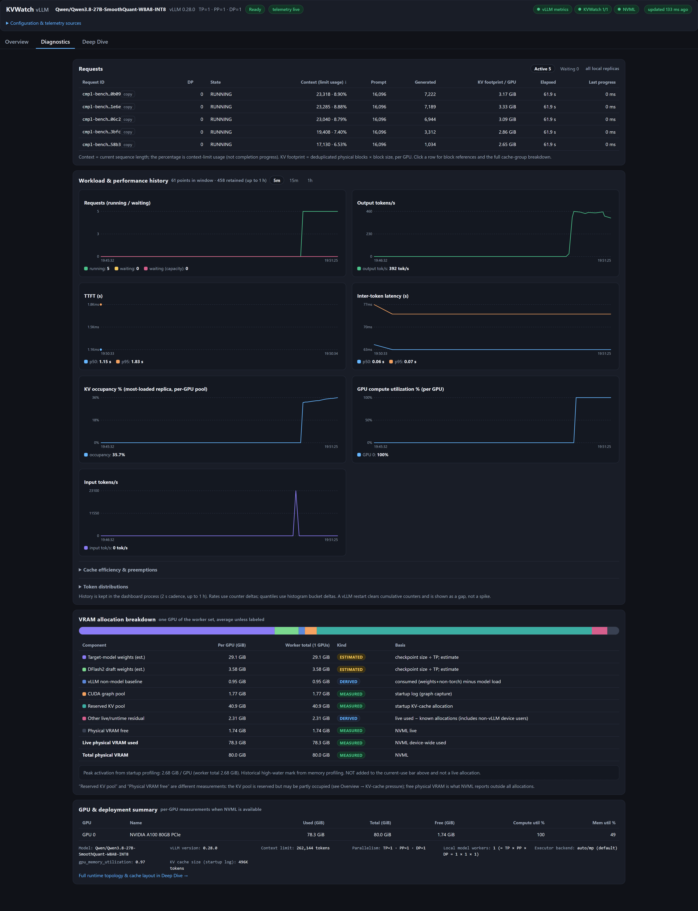
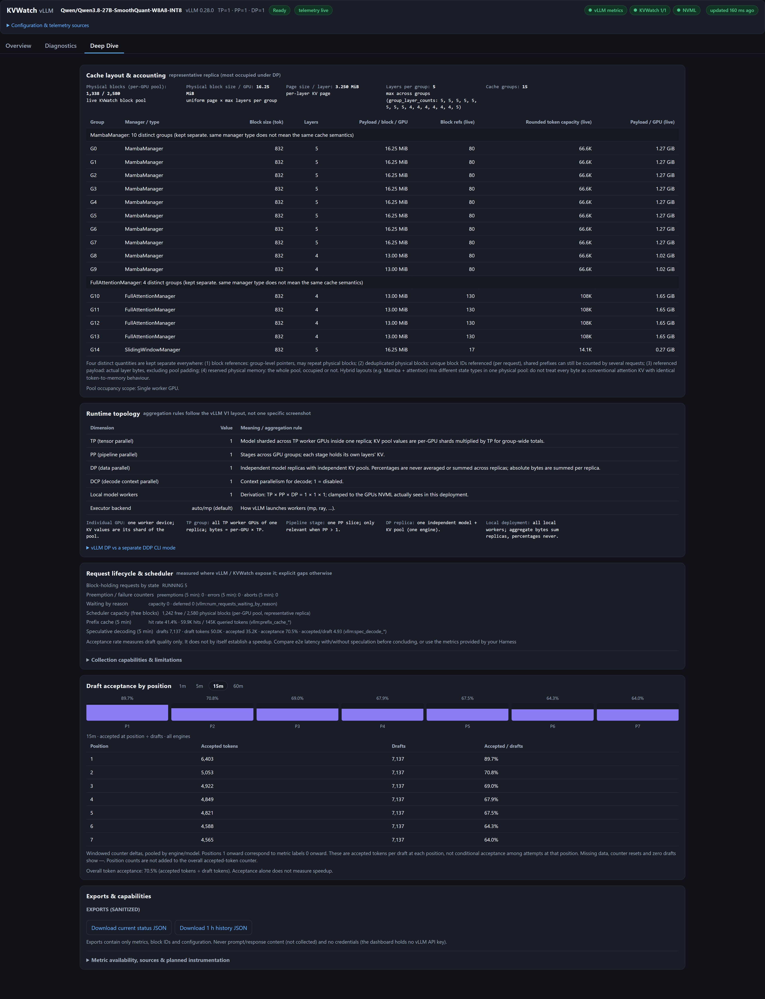
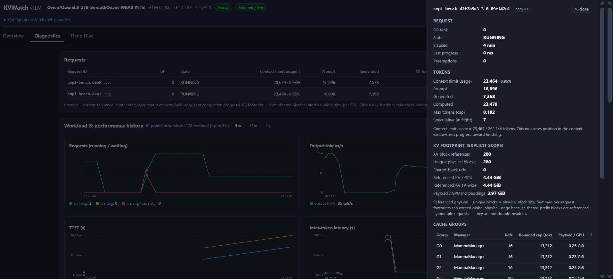

The visibility gap
GPU utilization and request counts don’t tell the whole story. Engineers needed to see which requests held KV-cache capacity and compare memory pressure, queues, and health across nodes.
LLM infrastructure / Observability
See what’s holding
your inference back.
I built KVWatch at Cerio to make LLM bottlenecks visible: from live latency and throughput to the KV cache held by individual requests. Three levels of detail help engineers move from a quick health check to a closer investigation.

Open full dashboardThree levels of visibility
Overview surfaces the essentials. Diagnostics connects performance history to active requests. Deep Dive exposes the cache layout and serving configuration behind the numbers.
01 / In summary
GPU utilization and request counts don’t tell the whole story. Engineers needed to see which requests held KV-cache capacity and compare memory pressure, queues, and health across nodes.
I built a vLLM scheduler plugin, a per-node dashboard, a Python fleet CLI, and a Confluence status view. Together, they connect internal serving state with live GPU and inference metrics.
An interface that connects a performance symptom to its context: current load, recent trends, memory allocation, and individual requests. Supporting fleet tools extend the same visibility to the terminal and wiki.
02 / Under the hood
A read-only plugin captures physical cache pools, request context, and token counters.
vLLM V1 AsyncScheduler
Combine scheduler snapshots with GPU telemetry, serving metrics, and startup logs.
NVML + Prometheus
Poll nodes in parallel and maintain a cached fleet snapshot for shared access.
Python + HTTP endpoints
Expose health, capacity, and throughput in the dashboard, CLI, and wiki.
Web + terminal + Confluence
No vLLM fork: KVWatchScheduler subclasses the V1 AsyncScheduler through its plugin interface and delegates scheduling to vLLM. Immutable snapshots expose physical pools, hybrid cache groups, request-level block references, and parallelism through a read-only HTTP endpoint.
Example serving configuration: The screenshots show vLLM 0.28.0 serving Qwen3.8-27B SmoothQuant W8A8 INT8 with DFlash2 speculative decoding and a 262,144-token context limit. The dashboard reports the actual topology on each node.
Fleet collection: A zero-dependency Python CLI queries nodes in parallel. For the wiki view, a background collector maintains one cached snapshot; viewers read that cache instead of triggering additional requests to every inference node.
03 / In depth
See readiness, active and waiting requests, current token throughput, TTFT, and memory pressure. Select a time window for latency percentiles, prefix-cache hits, and speculative-decoding acceptance.
Compare request activity, latency, throughput, cache occupancy, and GPU utilization over time. Inspect the VRAM breakdown and open an active request to see its token counts and cache footprint.
Explore cache groups, physical blocks, page sizes, and runtime parallelism. Inspect acceptance by draft position and export status or history for further investigation.

Explore Diagnostics ↗
Explore Deep Dive ↗
Inspect a request ↗04 / Engineering decisions
The plugin observes serving state and leaves scheduling decisions to vLLM. Telemetry is designed to stay separate from the work of running inference.
Nodes report online, partial, or offline health. Collection failures preserve the last known snapshot and surface the error, keeping gaps in the data visible.
Current token rates are separate from window averages. Memory breakdowns distinguish measured, estimated, and derived values; per-position draft acceptance makes its denominator explicit.
Hardware-free integration tests: Mock HTTP servers reproduce KVWatch and Prometheus payloads, including changing counters. Coverage includes health states, stale-data reconciliation, load-score boundaries, throughput calculations, and ANSI-safe CLI alignment.
Serving benchmarks: A companion vLLM benchmark harness controls prompt length, output length, concurrency, and request count. It saves run settings and results, with opt-in GPU and NVLink telemetry for performance experiments.
Data-parallel port reservation: Each rank needs its own telemetry endpoint. Reserving ports before server binding avoids collisions between concurrently starting rank processes.